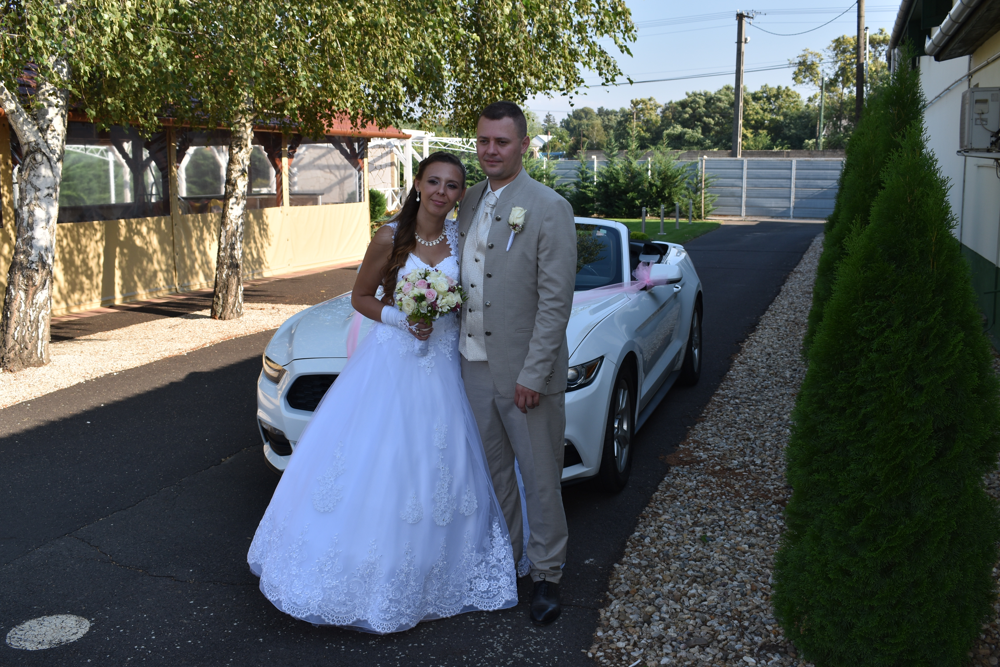

Ford Mustang 3.7 V6 kabrió

Bérelj amerikai autót sofőrrel:Lehet menyasszonyi autó, amely sofőrrel egy elegáns,
kivételes megjelenést biztosít, hogy életed egyik
legfontosabb napja tökéletes legyen.
De nem csak esküvőre bérelheted!
Születésnapra, névnapra, randevúra, fotózásra,
gyermeknapra élményautózásra, házassági évfordulóra,
videóklip forgatásra, vagy bármilyen más, fontos
eseményre, rendezvényre is.